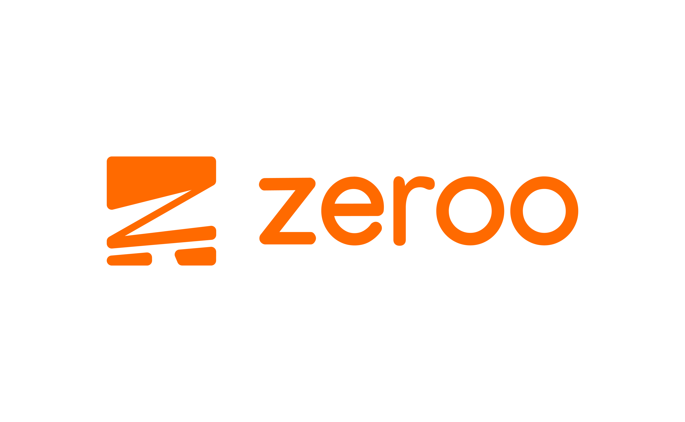
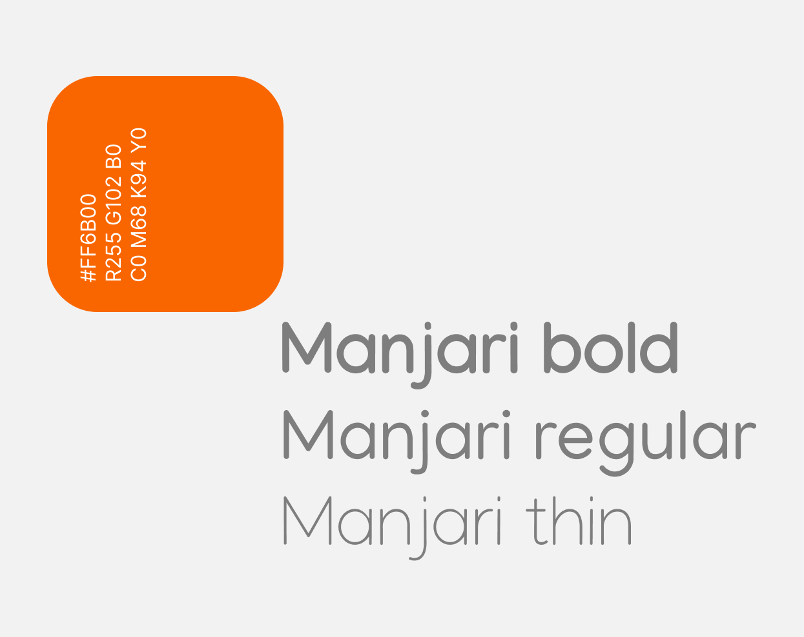
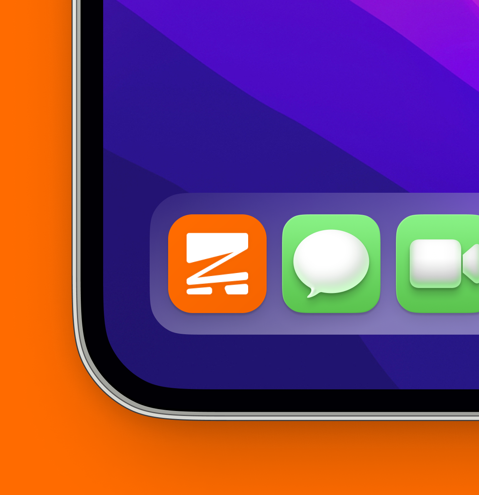
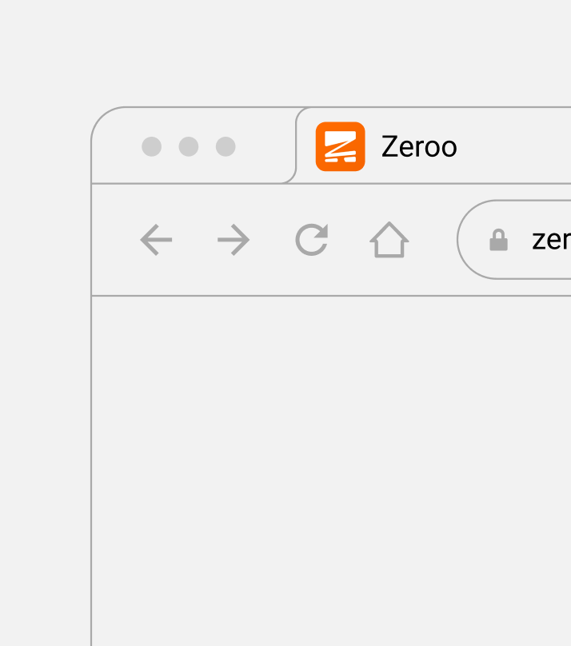

O desenvolvimento do ícone da marca Zeroo foi um processo cuidadoso e detalhado,
que exigiu atenção tanto à estética quanto à funcionalidade. Como o ícone seria a representação
visual da marca em um espaço tão reduzido e frequentemente utilizado, era essencial que ele fosse simples,
memorável e alinhado aos valores da empresa. A ideia principal é um "Z" estilizando em formato de carrinho de compras.

